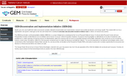

D&I Methods and Measures
Purpose
The purpose of the Dissemination and Implementation (D&I) Measures and Methods initiative is to bring together an international community of researchers and practitioners to create a growing and evolving resource for standardized, vetted D&I measures and methods that can lead to comparable datasets and facilitate collaboration and comparison across disciplines and regions.
The D&I initiative workspace and resource enables researchers and practitioners to:
- Identify and define constructs relevant to D&I research and practice.
- Learn about, comment on and rate existing measures for D&I.
- Share new D&I measures.
- Identify missing D&I measures.
- Learn about methods relevant to D&I.
The D&I Measure initiative has two major components:
- D&I GEM Constructs and Measures Workspace
The D&I constructs and measures component uses an interactive workspace on the NCI's Grid-enabled Measures (GEM) Database  to engage members of the research and practice community in an ongoing discussion about measures and constructs. Visit the workspace
to engage members of the research and practice community in an ongoing discussion about measures and constructs. Visit the workspace  to review, comment on, and rate current measures and constructs in D&I GEM and to add missing measures.
to review, comment on, and rate current measures and constructs in D&I GEM and to add missing measures.
- D&I Methods Tables
A comprehensive review of D&I literature resulted in the identification of several data collection, analysis, and design methods and approaches relevant to D&I research and practice. The results are compiled into two tables: (1) a complete listing of methods currently identified and (2) a limited subset of the complete list for which definitions, case studies and references have been provided as examples. This second table is a work in progress and additional definitions for other methods will continue to be added.
Feedback on the methods is invited and encouraged. Join the discussion forum on the Research to Reality (R2R) online community of practice and share your experiences with the proposed strategies and methods. Quick registration required to comment.
A separate strategies table, with case studies and references, is in development and will be added to this site at a later date.
Why should I get involved?
If you are interested in advancing the D&I field, this Initiative is an excellent way to contribute to the field and engage with colleagues. The D&I Measures Initiative gives you access to D&I constructs, measures, strategies, and methods developed by other colleagues and also provides you with a platform to share your own D&I measures.
How can I get involved?
- Visit the D&I GEM Workspace
 and review, comment on, and rate existing D&I measures and constructs, and add additional ones.
and review, comment on, and rate existing D&I measures and constructs, and add additional ones. - Review the D&I methods tables above and join the discussion on the Research to Reality community of practice on these approaches to provide feedback and share your experiences.